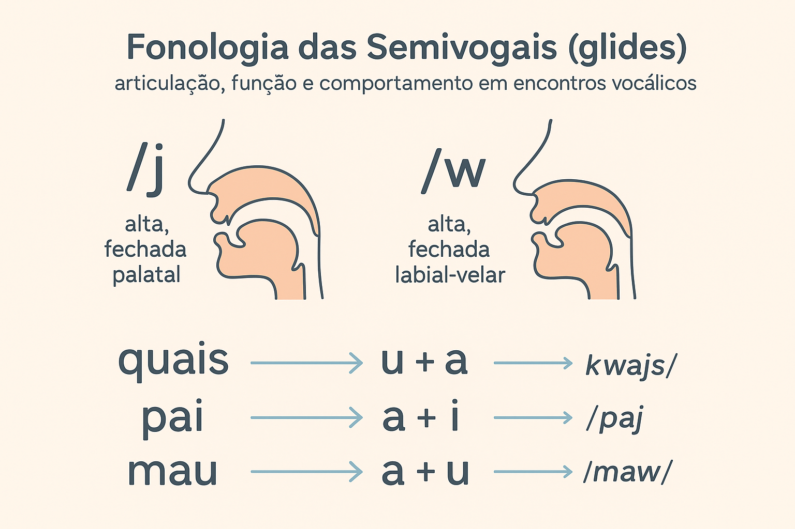

Fonologia das Semivogais (Glides / Semiconsoantes): Articulação, Funções e Comportamentos em Encontros Vocálicos
A fonologia das semivogais ocupa um espaço central nos estudos sonoros do português brasileiro, sobretudo pela forma como esses sons se articulam e se combinam com as vogais plenas. Também chamadas de glides ou semiconsoantes, as semivogais apresentam características semelhantes às vogais altas (/i/ e /u/), mas não exercem função silábica nuclear. Assim, elas desempenham papel decisivo na formação de ditongos, tritongos e diversos encontros vocálicos, como ocorre em palavras como quais, pai, água e quero. Compreender sua natureza articulatória e seus comportamentos é essencial para análises fonológicas consistentes e para o ensino de língua portuguesa.
1. O que são Semivogais?
As semivogais do português brasileiro são representadas foneticamente por [j] e [w]. Embora compartilhem traços articulatórios das vogais altas, distinguem-se por sua função: não ocupam o núcleo da sílaba, mas integram sua margem. Assim, colaboram na estruturação de sequências vocálicas que originam ditongos e outras combinações fonológicas.
“Semivogais são sons vocálicos de menor intensidade e que, apesar de sua natureza articulatória, não desempenham papel nuclear na sílaba, funcionando como elementos marginais.”
A semivogal [j] aproxima-se da vogal /i/, enquanto [w] aproxima-se da vogal /u/. Ambas surgem apenas quando acompanhadas de uma vogal plena — o que as coloca em posição não silábica.
2. Articulação das Semivogais
A articulação das semivogais envolve movimentos rápidos de “deslizamento” (glide) do trato vocal, razão pela qual são chamadas de glides. A língua mantém posição alta, semelhante à das vogais /i/ e /u/, mas a passagem do ar é menos aberta e menos sonora, reduzindo sua intensidade.
“As semivogais articulam-se como vogais altas, mas apresentam menor proeminência sonora, não sendo capazes de constituir sozinhas o núcleo silábico.”
Esse caráter híbrido — articulatório vocálico, mas função não nuclear — explica parte dos fenômenos que ocorrem em encontros vocálicos.
3. Semivogais e Estrutura Silábica
Na organização silábica do português (onset–núcleo–coda), as semivogais podem aparecer tanto no onset quanto na coda, mas jamais no núcleo. Assim, formam os principais tipos de encontros vocálicos:
- Ditongos decrescentes: semivogal + vogal (ex.: pai [paj], mau [maw]).
- Ditongos crescentes: vogal + semivogal (ex.: água [ˈaɡwa], série [ˈsɛɾje]).
- Tritongos: semivogal + vogal + semivogal (ex.: Uruguai [uɾuˈɡwaj]).
Essas combinações resultam da interação articulatória entre vogais plenas e semivogais, e obedecem à hierarquia de sonoridade da língua.
4. Comportamentos em Encontros Vocálicos
Nos encontros vocálicos, as semivogais não são meras vogais reduzidas, mas elementos estruturados fonologicamente. Um caso ilustrativo é o da palavra “quais”.
4.1 O caso de “quais”
A palavra quais ([kwajs]) apresenta dois glides operando simultaneamente:
- [w] no ataque (representado pelo “u” em “qu”), formando /kw/;
- [j] na coda da sílaba final, compondo o ditongo decrescente -ais ([ajs]).
“No português, a letra u em ‘qu’ e ‘gu’ pode funcionar como glide [w], desde que efetivamente pronunciada, como em quero e quase.”
4.2 Encontros com “qu” e “gu”
Quando seguidas de e ou i, as sequências “qu” e “gu” frequentemente apresentam o som da semivogal [w]:
- quero → [ˈkwɛɾu]
- quando → [ˈkwɐ̃du]
- guerra → /gɛʁa/ (aqui o u é mudo)
É importante ressaltar que nem todo “u” nessas combinações é pronunciado — mas, quando é, tem valor de glide.
4.3 Semivogais e hiatos
Em certos contextos, /i/ e /u/ não se reduzem a glides, formando hiatos plenos, como em:
- saída → [saˈida]
- saúde → [saˈudʒi]
A preservação do hiato depende de fatores como tonicidade, morfologia e estilo de fala (ditongação é comum na fala rápida, mas nem sempre aceita em norma padrão).
5. Critérios Fonológicos para Identificar Semivogais
A identificação de semivogais pode ser feita com base em parâmetros fonéticos e fonológicos, entre eles:
- Intensidade sonora menor que a das vogais plenas.
- Função silábica não nuclear, pois não estruturam o núcleo.
- Qualidade articulatória semelhante à de /i/ e /u/.
- Participação em ditongos e encontros vocálicos.
Esses critérios sustentam análises mais precisas da estrutura e dinâmica silábica do português.
6. Considerações Finais
A fonologia das semivogais revela a complexidade das interações vocálicas no português brasileiro. Glides como [j] e [w] são fundamentais para compreender fenômenos como ditongos, tritongos e encontros vocálicos, além de questões relacionadas à acentuação, prosódia e segmentação silábica. Seu entendimento é essencial para estudos linguísticos e para práticas pedagógicas, permitindo análises rigorosas e facilitando o ensino de aspectos fonológicos da língua.
Referências
BISOL, L. Fonologia do Português Brasileiro. Porto Alegre: EDIPUCRS, 2005.
CÂMARA JR., J. Mattoso. Estrutura da Língua Portuguesa. Petrópolis: Vozes, 1970.
MATEUS, M. H. M.; BRITO, A. M. Fonética e Fonologia do Português. Lisboa: Universidade Aberta, 1991.
MAGALHÃES, J. Fonologia: princípios fundamentais. São Paulo: Contexto, 2012.
Explore Outros Conteúdos
Continue seus estudos acessando outras seções do site Mestre Kira: